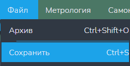

Функция "Сохранить"
Данная функция отвечает за сохранение изменений в открытом файле.
Внимание: данная кнопка доступна только когда открыт хотя бы один текстовый редактор!
Путь и вызов
Нахождение в программе
Верхнее меню → "Файл" → "Сохранить"
Горячие клавишы
Ctrl + SНа изображении показано нахождение данной функции в программе:

Действия после нажатия
После нажатия горячих клавиш или ЛКМ по кнопке "Сохранить" изменения, внесённые в файл, в нём же сохраняются.